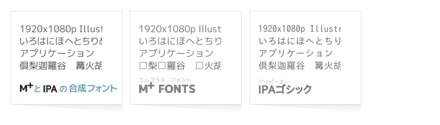

ホーム

フォント紹介
M+フォントは高品質デザインでぜひ日常的に使いたいのですが、漢字がたりない‥‥そこでIPAゴシックから漢字を補完しました。どなたでも無料でお使いになれます。
| M+フォントに手を加えずIPAゴシックと合成しました。 | |
| M+の字形に改変を加えてIPAゴシックと合成しました。 |
更新情報
2023-11-25
Webサイトを移転しました。Webページをダークモード対応にしました。MigMix 2P/2M、Migu 2M、Circle M+ 2p/2m、Clampフォント 2p/2m を修正しました。詳細は変更履歴をご参照ください。
2020-04-15
Clampフォントを修正しました。詳細は変更履歴をご参照ください。
2020-03-07
MigMix／Miguフォントをバージョンアップしました。変更点「M+ TESTFLIGHT 063a に同期」「Clampフォントを追加」など‥。詳細は変更履歴をご参照ください。
2015-07-12
MigMix／Miguフォントをバージョンアップしました。変更点「M+ TESTFLIGHT 060に同期」など‥。詳細は変更履歴をご参照ください。
Webサイトをスマートフォン対応しました。画像をSVGにしたのでページを拡大表示すると（PCの場合Webブラウザの横幅を変えると）一部画像を大きく見ることが可能です。
2013-06-17
MigMix／Miguフォントをバージョンアップしました。変更点「M+ TESTFLIGHT 056に同期」など‥。詳細は変更履歴をご参照ください。
2013-06-02
新規フォントPixelMplusを追加しました。
2013-05-07
Migu 1Cフォントだけ置き換えました。詳細は変更履歴をご参照ください。
2013-04-30
MigMix／Miguフォントをバージョンアップしました。変更点「M+ TESTFLIGHT 055に同期」、JIS2004に対応など‥。詳細は変更履歴をご参照ください。
2012-10-30
MigMix／Miguフォントをバージョンアップしました。変更点「M+ TESTFLIGHT 052に同期」、半濁点を小さめ、Migu 1Cのゼロにスラッシュつきなど‥。Circle M+を新規追加。詳細は変更履歴をご参照ください。Webサイトの説明文章も書きたしました。
2012-06-07
IPAフォントライセンスv1.0が非共存ライセンスであるという指摘を受け、ライセンス文のみ修正したバージョン 20120411-2 でMigMix／Miguフォントを再リリースしました。ttfファイルは 20120411 と同じで、README.txtとライセンスを書いたテキストファイルのみの変更です。Migu 1VS/2DSは公開停止しました。
2012-04-11
MigMix／Miguフォントをバージョンアップしました。変更点「M+ TESTFLIGHT 048に同期」、仕様変更など‥。詳細は変更履歴をご参照ください。
2012-04-03
レビュー記事 窓の杜 - 【＃モリトーク】第3話：「M+ FONTS」とその仲間たち が掲載されました。
2012-03-12
レビュー記事 窓の杜 - 【REVIEW】「M+ FONTS」を丸ゴシック化したフリーの日本語フォント「Rounded M+」 が掲載されました。
2012-03-06
レビュー記事 窓の杜 - 【REVIEW】「M+ FONTS」と「IPAフォント」を統合した日本語フォント「MigMix」 が掲載されました。
2012-02-26
新規フォントRounded M+を追加しました。
2011-10-02
MigMix／Miguフォントをバージョンアップしました。変更点「M+ TESTFLIGHT 043に同期」、不具合修正、ファイル名変更（Linuxで注意）など‥。詳細は変更履歴をご参照ください。
2011-08-25
MigMix／Miguフォントをバージョンアップしました。変更点「M+ TESTFLIGHT 042に同期」「判別しにくい文字'カ力 エ工 ロ口 ー一 ニ二 タ夕'の字形を一部変更した」など‥。詳細は変更履歴をご参照ください。
2011-06-10
MigMix／Miguフォントをバージョンアップしました。変更点「M+ TESTFLIGHT 040に同期」「新規フォントを追加」など‥。詳細は変更履歴をご参照ください。
2011-05-31
新規フォントMigu 1VSに関するブログ記事「[フォント] DejaVu Sans と DejaVu Sans Condensed の比較 - itouhiroメモ」を書きました。
2011-05-14
MigMix／Miguフォントをバージョンアップしました。変更点は「M+ TESTFLIGHT 039と同期」「IPAゴシック Ver.003.03に更新」など。詳細は変更履歴をご参照ください。
2011-05-07
プログラミング用フォント Rictyに、Migu 1Mが採用されました。はてなブックマークでも注目されています。
2011-04-20
Webサイトを作り変えました。シンプルデザインにしています。
2011-04-18
MigMix／Miguフォントをバージョンアップしました。変更点は「M+ TESTFLIGHT 038と同期」など。詳細は変更履歴をご参照ください。
2011-02-07
新しく Miguフォントをリリースしました。MigMixとの違いは「半濁点を大きくした」「Migu 1Pの ひらがな・カタカナを可変幅に変更」「Migu 1Mの行間をせまくした」です。以前の M+1P+IPAG circle等の後継フォントです。
MigMixも「M+ TESTFLIGHT 036対応」にバージョンアップしました。
Webサイトを作り変えて、MigMix／Miguを前面に紹介するようにしました。
2011-01-21
MigMixフォントをアップデートしました。変更点は「M+ TESTFLIGHT 035対応」「ただし太字体の扱いは従来と同じ」「縦書き対応」です。
2010-12-13
M+フォントの「Windows 環境での多ウエイト展開」「縦書き」について調べました。http://d.hatena.ne.jp/itouhiro/20101213
2010-06-26
M+フォントとIPAフォントの合成、新版リリースです！ 特徴は「M+の漢字を使用するようにした」「太字（ボールド体）を用意した」「IPAフォントにVer3.02を使用した」点です。
IPAフォント Ver3を使用したらライセンス上、フォント名に「IPA」が使えなくなったので、別のフォント名にしました。MigMixフォントです。
スクリーンショット

フォント： MigMix 1P, MigMix 2M
環境： Linux (Ubuntu 10.10)
元ページ：The Web KANZAKI
フォント： Migu 1C, Migu 1M
環境： Linux (Ubuntu 12.04)
元ページ：Wikipedia


縦書きも可能です。
-
フォント： Migu 1P
環境： Windows ＋ Illustrator CS6
テキスト: 問わずがたりの洋酒外史 -
フォント： Migu 1M
環境： Windows + Microsoft Word 2010
{kind=link}
{kind=link}
謝辞
M+ フォント製作者の皆様、フォント作成ソフト FontForge 製作者の皆様、ありがとうございます！